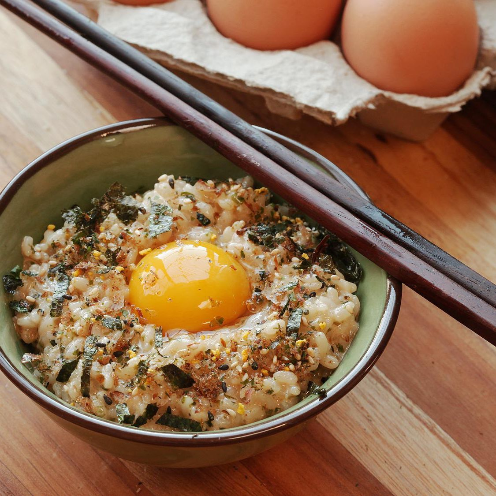

Tamago Kake Gohan

Description
A simple yet delicious Japanese breakfast consisting mainly of rice and egg, with some Furikake seasoning added to the mix.
Ingredients
- 1 cup hot cooked white rice (about 12 oz or 340g)
- 1 large egg (plus 1 optional egg yolk
- 1/2 teaspoon soy sauce, plus more to taste
- 1/2 teaspoon mirin (optional)
- Pinch kosher salt, plus more to taste
- Pinch MSG powder (optional)
- Pinch Hondashi (optional)
- Furikake to taste (optional)
- Thinly sliced or torn nori to taste (optional)
Steps
- Place rice in a bowl and make a shallow indentation in the center. Break the whole egg into the center. Season with 1/2 teaspoon soy sauce, 1/2 teaspoon mirin (if using), a pinch of salt, a pinch of MSG (if using), and a pinch of Hondashi (if using).
- Stir vigorously with chopsticks to incorporate egg; it should become pale yellow, frothy, and fluffy in texture. Taste and adjust seasonings as necessary.
- Sprinkle with furikake and nori (if using), make a small indentation in the top, and add the other egg yolk (if using). Serve immediately.
- Enjoy!